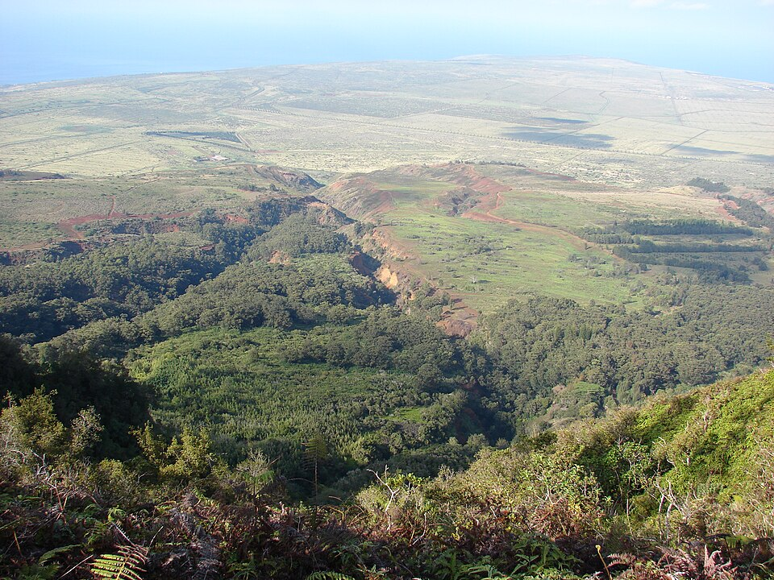

Munro Trail
Place: Munro Trail, Lānaʻi
Type: Mountain road / hiking trail
Namesake: George Campbell Munro (1866–1963), a New Zealand-born naturalist, ornithologist, and ranch manager who pioneered watershed restoration on Lānaʻi.
Story it tells: How a ranch manager's observation that pine trees could capture moisture from passing clouds inspired reforestation efforts along Lānaʻi's highest ridge, rebuilding the watershed and leaving a lasting mark on its landscape.

Munro Trail is a winding, 12.8-mile dirt road that traverses the uplands of Lānaʻi, climbing toward Lānaʻihale, the island's highest point at approximately 3,370 feet. Named for George Campbell Munro (1866–1963), a New Zealand-born naturalist and ranch manager, the route passes through forests of Cook pine, ironwood, eucalyptus, and native vegetation. Before becoming a formalized road in 1955, the route followed older foot trails used by Hawaiian travelers and later by paniolo during Lānaʻi's ranching era. Today, the narrow road is used for hiking, mountain biking, and limited four-wheel-drive access, offering views across the island and, on clear days, neighboring islands. Its name remembers a man whose work helped reshape the landscape through which the trail passes.
Munro arrived in Hawaiʻi in 1890 as an assistant to Henry C. Palmer, collecting native bird specimens for British ornithologist Walter Rothschild. Although he lacked formal scientific training, he developed an extraordinary knowledge of Hawaiian birds and ecosystems. After working in ranching on Kauaʻi and later Molokaʻi, Munro became manager of Lānaʻi Ranch in 1911, remaining through successive ownership changes until his retirement in 1930. His responsibilities extended far beyond cattle. Decades of grazing by introduced sheep and goats had stripped vegetation from portions of Lānaʻi, accelerating erosion and threatening the island's already limited water supply. Munro worked to reduce destructive grazing, protect remaining native forests, and restore vegetation to the mountain slopes. His efforts depended heavily on the knowledge and labor of Hawaiian ranch hands, many of whom he respected deeply and knew from his earlier work on neighboring islands.
One of Munro's most consequential observations began beside his home at Kōʻele. On nights when no rain was falling, he noticed water dripping from a tall Norfolk Island pine onto the corrugated roof of his manager's quarters. The tree was capturing moisture from passing clouds and fog, a process known as fog drip. Recognizing its potential for an island struggling with drought, Munro began planting Cook pines and other trees along the slopes and ridgeline of Lānaʻihale. He and his ranch workers transported seedlings into the uplands, where the growing forest could intercept moisture carried by the trade winds. The trees helped establish a distinctive forested landscape and became part of broader efforts to protect Lānaʻi's watershed. The contrast between the green mountain ridge and the island's drier lowlands remains one of the most recognizable features of the trail today.
Munro's legacy extended well beyond ranching and watershed restoration. He became one of Hawaiʻi's important early ornithologists, documenting native birds at a time when many species were quickly disappearing. He collected the only known specimen of the Lānaʻi hookbill, an extinct Hawaiian honeycreeper later named Dysmorodrepanis munroi in his honor. He also helped establish the Honolulu Audubon Society in 1939 and published Birds of Hawaii in 1944. His writings preserved observations about Hawaiian wildlife as well as the lives and work of the paniolo who helped manage Lānaʻi's ranch lands. Munro Trail carries his name through a landscape he worked to restore, connecting the island's ranching history, conservation efforts, and the enduring importance of its mountain watershed.